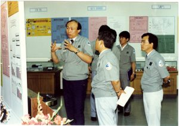

등록일 2018-10-15
한국비료에 있던 인재들이 너도나도 떠나고 나니, 나 역시 좀이 쑤시긴 마찬가지였다. 대우국민차공장 최은순 전 사장은 내가 한비에 입사했을 당시 차장이었다. 중화학공업추진위원회(1973년 5월 국무총리를 위원장으로 관계 장관 및 각계 전문가를 모아 신설)에 제일 먼저 뽑혀간 분도 바로 최 사장이었다.
하루는 이분이 울산에 내려와 나를 찾았다. “추진위에 가서 함께 일하자”는 것이었다. 그렇지 않아도 내심 싱숭생숭하던 차에 바로 짐을 꾸려 상경했다. 추진위 사무실은 광화문 정부종합청사에 있었는데, 그곳에서 6개월을 일했다.
그러다 제2종합제철(1973년 제1제철인 포항제철에 이어 발족, 이후 1977년 포철에 합병됨)이 설립되고 관련 일을 맡게 됐다. 생판 모르는 제철을 공부하기 위해 자연스럽게 포스코(당시 포항제철)가 있는 포항에 자주 내려갔다. 제2종합제철에는 포철 사람들도 많이 와 있었다. 포스코와의 인연이 시작된 계기다.
포철을 이끈 박태준 회장은 잊을 수 없는 기업가다. 330만5000㎡(100만 평)가 넘는 광활한 땅에서 벌어진 대역사가 일사불란하게 이뤄진 건 전적으로 박 회장의 능력 덕분이었다고 생각한다. 포스코는 당시 이미 크리티컬 포트 매니지먼트(CRTCPM)라는 ‘계획관리’ 비법을 썼다.
포철에 가보니 총상황실에 도표가 죽 내려와 있고 각 담당자들의 보고 체계가 일사불란하게 잡혀 있었다. 언뜻 군 작전사령부가 떠올랐다. 계획관리라는 건 이런 것이었다. 모든 계획을 상세하게 세우고 하루에 한 번씩 모두 모여 조정했다.
직원들에 대한 복리 후생도 당시의 기업들과 비교를 불허했다. 일례로 한비는 엔지니어들을 중심으로 기숙사를 지었다. 하지만 포철에 가보니 돈이 없어 난리 치는 와중에도 전 사원들에게 주택을 다 지어줬다.
애사심은 생활이 안정되는 데서 출발한다. 자녀들의 교육도 마찬가지다. 당시 이미 포철은 사원 자녀들을 위한 학교를 다 세워둔 상태였다. 놀라지 않을 수 없었다. 현재 포스코 주변 주택단지들은 분양을 거쳐 모두 개인 재산이 됐다.
‘제철입국, 사업보국, 우향우정신(대일청구권자금, 이 돈으로 실패하면 우향우해서 영일만에 빠져 죽자는 데서 나온 말)’이라는 큰 소명감, 여기에 직원들을 끊임없이 배려하는 리더의 하향온정이 있었기에 포철은 성공할 수 있었다.
박 회장의 사원들에 대한 사랑은 실로 대단했다. 군 시절 터득했을 것이라고 짐작되는데, 군은 결국 사기로 결정되는 조직이다. 전투력과 사기는 같다. 포철 사람들이 어떻게 하면 사기가 오를 것인지 끊임없이 생각한 사람이 박 회장이었다.
박 회장은 또 ‘우리가 하는 일이 가치가 있고 의미가 있다고 생각하는 게 가장 중요하다’고 여겼다. ‘세계 철강사의 역사를 다시 쓰자’, ‘가난한 나라를 철강을 통해 부국으로 만들자’, ‘조상들의 피와 땀으로 만든 대일 청구권 자금(우향우 정신)을 가슴에 새기자’. 그는 의미와 비전을 제시한 최고경영자(CEO)였다. 자부심과 열정이 모이면 이미 성공한 조직이다.
사기와 명분이 합쳐지면 최고가 된다

1987년 삼성전기의 무한탐구실. 각 제품별로 시장 현황, 미래 전망 등에 관한 자료를 모아 놓고 수시로 자유로운 토의와 회의를 가졌다. 인재 교육과 육성을 제일로 여기는 삼성만의 독특한 실험이었다.
제2종합제철은 당시 세계 최고인 미국의 US스틸과 합작회사를 만들려고 했다. 아산만으로 입지가 결정됐는데, 중국으로 수출하기 위한 전진기지 역할 때문이었다.
US스틸이 자랑했던 산소 제강법이라는 기술도 도입하기로 했는데, 한국과학기술연구원(KIST)에 미국 기술자들을 모아놓고 열었던 강연이 떠오른다. 강연이 끝난 후 질의응답 장면을 보며 깜짝 놀랐다.
단상에 선 젊은 기술자의 강의가 끝나자 밑에서 듣고 있던 나이 든 퇴역 기술자들이 하나같이 ‘서(sir)’라는 존칭을 붙이는 것이었다. 나중에 미국 기술자에게 “왜 그러느냐”고 물어봤다.
그러자 “미국인들은 나이가 아니라 실력으로 존경한다”는 대답이 돌아왔다. “저분은 정말 뛰어난 업적을 남긴 사람이고, 난 현장의 기술자다. 수준이 하늘과 땅 차이니 당연히 존경하는 것이다.” 그것이 기술입국·보국의 단면이었다.
포철은 일본에서 기술을 도입했다. 용광로 1시간에 몇 톤이 생산되고, 용적이 얼마이며, 직경과 높이는 얼마인지 등 세부 사항을 일일이 계산하는 식이다. 반면 미국은 ‘어디에 몇 톤짜리 제철소가 있는데, 완공 후 5년 동안 얼마가 생산된다’는 식이다.
처음부터 내려온 실적 데이터를 베이스로 해서 지금의 최신 기술을 적용해 계산하는 방법이다. 반면 일본식을 도입한 우리는 사전 계산 자료가 꽉 차 있어야 했다. 미국의 데이터는 놀랄 만큼 간단했다. 하지만 결과는 매번 거의 같았다. 서구는 과거의 경험을 바탕으로 계속 업그레이드해 적용하는 계승 발전형인데 비해 우리는 단절형인 셈이었다. 이는 지금도 마찬가지다.
한비에 있으면서 리더십이란 무엇인지 생각하게 된 계기가 있었다. 당시 한비에는 공장장이 두 분 있었다. 한 분은 ‘일을 언제까지 하라’, ‘조사해서 보고하라’, ‘시행하라’ 등 과제를 던져주는 스타일이었다.
생전처음 해보는 일을 어렵사리 해결해 가져가면 “왜 이렇게 했느냐, 왜 내용이 잘못됐느냐”는 지적이 이어졌다. 단순히 일만 던져주고 평가하고 지적하는 스타일이다. “여기서 물으면 되는데 왜 못했느냐”는 건 사후 약방문 식이다. 이런 상사는 부하 직원 야단치기에만 급급하다.
또 한 분은 일을 시킬 때 자신이 알고 있는 것들을 자세하게 설명하는 스타일이었다. 활용할 수 있는 정보원, 협력자 등을 미리 얘기해 줬다. 기업에 가장 중요한 것은 성과를 창출하는 것이다.
선배로서 가지고 있는 것들을 미리 다 알려주고, 거기에 부하의 창의나 노력이 합쳐지면 게 더 큰 성과를 낼 수 있다는 게 그분의 생각이었다. 모든 사원들이 당연히 후자의 부장을 존경하고 따랐다. 이분이 하는 일은 모두가 참여해 시너지가 창출됐다. 반면 전자의 부장은 마음으로 따르는 이가 거의 없었다.
인재 육성이 기업가의 도덕이다
조직의 목표를 최대한 빠르고 효율적으로 창출하는 것도 후자의 경우가 더 맞지 않을까. 실수를 하지 않도록 도와주는 스타일은 이병철 회장도 마찬가지였다. 사원이 부정을 저지르면 당사자나 상사의 감독 여부를 따지는 게 일반적이다.
하지만 이 회장은 사장을 심하게 질책했다. “사원 한 사람 한 사람이 그 부모에겐 귀중한 아들(자식)이다. 인간은 누구나 견물생심을 가지고 있다. 도를 닦은 도사가 아닌 다음에야 참기 어렵다. 사장으로서 귀한 남의 자식들이 나쁜 길로 들어가지 않도록 정성을 다해야 하는데, 어떻게 했기에 인생을 망치도록 만들었나.” 이런 식이었다.
이건희 회장도 신경영 때 ‘삼성헌법’을 만들었다. 핵심은 ‘도덕성·인간미·에티켓·예의범절’ 등 네 가지다. 도덕성이나 인간미를 설명할 때 항상 하는 얘기가 “남의 집 귀한 자식 데려다 10년 후 다른 회사 직원보다 나은 사람이 안 됐다면 그야말로 인간미와 도덕성이 없는 기업”이라는 것이다.
사원들이 훌륭한 인재로 성장하도록 교육, 훈련시키고 스스로 단련하게 하는 것, 그것이 바로 이건희 회장이 말한 인간미와 도덕성이 있는 일이었다. 두 회장 모두 가치 있는 인재의 발전을 중시했다. 이는 개인뿐만 아니라 조직과 사회에도 큰 도움이 되는 일이다. 인재 경영에서 놓쳐서는 안 될 대목이다.
2005년 노무현 대통령이 추진한 ‘10대 성장 동력 선정’ 작업에 참여했다. 세계적인 석학들을 초청해 토론도 많이 했다. 하루는 청와대에서 신성장 동력 선정 위원들에게 만찬을 베풀었다. 노 대통령은 “평생 존경하는 선생님들이 와 주셔서 정말 감사하다.
선진국으로 발전하기 위해 한마디 충고해 달라”고 말했다. 그러자 많은 사람들이 이구동성으로 사람, 즉 인재의 중요성을 강조했다. “전 세계가 이미 변화돼 국가가 의제를 선정하고 추진하는 시대는 지났다. 앞으로의 성장 동력은 바로 사람이다.
대통령은 교육에 총력을 기울여 국민의 역량과 자질을 어떻게 올린 것인가 고민해야 한다.” 요약하면 이랬다. 리더는 조직원들을 스스로 학습하게 하고 깨닫게 해서 훌륭한 인재로 만드는 사람이다. 그게 리더의 가장 중요한 덕목이다. 이병철 회장이 라디오 대담에서 한 말이 생각난다.“난 내 시간의 80%를 인재 개발에 썼다.”
손욱 서울대 융합과학기술대학원 교수(전 삼성종합기술원장·농심 회장)
정리 장진원 기자 jjw@hankyung.com